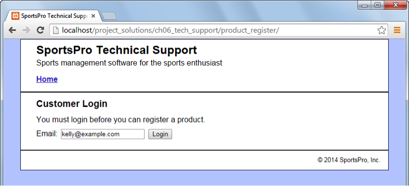
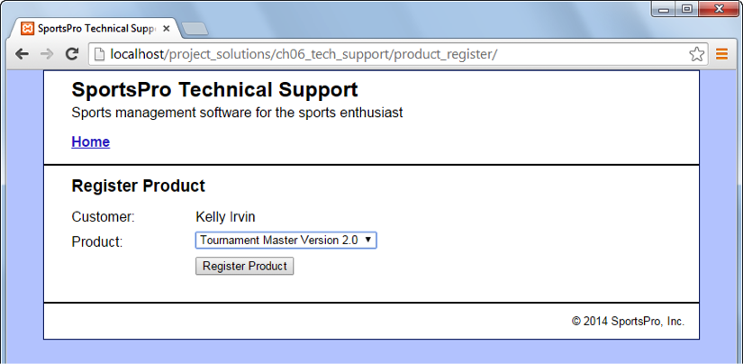
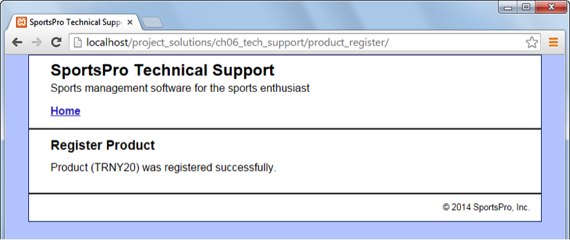

Unit 2 Exam
Directions
You may use any resource except another person to complete this exam.
Get the Seed Code
Create the Database
- Create a ‘tech_support’ database in both the remote and local environments as done with the guitar database in Chapter 3. Alter the name as needed to work.
- You may reuse the existing proxy user with the new database in both environments, and the same rights should exist with the new database: SELECT, INSERT, UPDATE, and DELETE.
- Import the tables and data using the sql file provided in the downloaded seed code.
- You will need a database connection file with a connection to the new database. Test that it works.
- In the product_register controller, reference the database connection file with the new connection created in step 4 above.
Set up the Work Space
- In the local environment, copy the tech_support folder from the download file to a location in the htdocs folder. All work should be performed here.
- It is vital that you complete the exam in the local environment and then upload and thoroughly test the finished application in the production environment.
- There should be no link to the exam on your web site. The exam should be accessed only by typing “tech_support” at the end of your URL.
Outcomes
You’ll create an application that allows a customer to register a product. The products and customers already exist in the database. To successfully complete this exam, you will:
- Create a “Login” page that requires a customer to enter a valid email address prior to being able to register a product. See “Login page” below. [This is not a true login. The customer will have to pass through this page for each product registration and enter their email address each time.]
- Having passed through the login page, the customer can register a product without having to enter her or his name into the form, their name is captured and inserted into the register product form based on the login. See the “Register Product view 1” page below.
- Store the registration information in the registrations table.
- When the registration is complete, deliver a confirmation. See “Register Product view 2” below.
Implementation Expectations
- The applications will be written using an M-V-C approach.
- All incoming data will be checked and filtered against malicious inputs.
- PDO will be used for PHP to database interactions.
- PDO prepared statements will be used when interacting with the database using PHP.
- Follow the operation / specification requirement listed below each of the page illustrations; these are the requirements for the specific page.
- Refer to the comments in the various views, models, and controllers provided in the seed code for additional information.
The Customer Login page
Operation
- The "login" page should automatically load when the product registration link is clicked.
- To log in, the customer can enter his or her email address and click on the Login button.
The Register Product page (view 1)

Operation
- To register a product, the customer can select the product and click on the Register Product button.
- The customer name must be pre-populated and be non-editable in the registration form.
Specifications
- The Product drop-down list should include all products. If you have any trouble with this, look ahead to figure 7–5 in Chapter 7 and figure 8–11 in Chapter 8.
The Register Product page (view 2)

Operation
- The user should only be allowed to register a product once per email address. After the customer clicks on the Register Product button, the application displays a message that indicates that the product was registered successfully or not. This message should include the product’s code.
Submission
- Follow the directions in the “Set up the Work Space” section above.
- When done, submit your code for review to the Unit 2 Exam Code Submission dropbox.
- The code for the Unit 2 Exam must be submitted for professor review as a zip file.
- Locate and zip the folder containing the code for the exam.
- Be sure the zip file name includes your name: e.g. Exam2-JohnSmith.zip.
- Submit the file to the dropbox in this week's module.
Objectives and Grading
All class objectives are part of this exam.
Objective 1: 9 points
- All views (3 total) must be valid html, CSS, and be semantic in the markup—1 point for each requirement per view, 9 points total.
Objective 2: 17 points
PHP is used for:
- Controlling the flow of the applications correctly (starting from login: login form → successful login → product registration → form and confirmation) — 2 points each flow point, 8 points total.
- Generating the HTML code for the drop-down in the Product Registration page — 3 points.
- Capturing the user name from the login and including it in the Product Registration form — 3 points.
- Insuring the various functions and components of the M-V-C are in proper scope — 3 points.
Objective 3: 18 points
Both the login and product registration applications are constructed using M-V-C, with:
Login Application
- Interface residing in views — 3 points.
- Logic residing in the controller — 3 points.
- Database interactions contained in the model — 3 points.
Product Registration Application
- Interface residing in views — 3 points.
- Logic residing in the controller — 3 points.
- Database interactions contained in the model — 3 points.
Objective 4: 12 points
SQL queries are operational and properly formed for use in PDO prepared statements for each:
- Handling the login process — 4 points.
- Populating the product list — 4 points.
- Registering the product — 4 points.
Objective 5: 10 points
Data validation (server-side) and error handling is present for the:
- Login process — 5 points.
- Product registration process (the user should only be allowed to register a product once per email address) — 5 points.
Objective 6: 15 points
- Login application works — 5 points.
- Product registration works — 5 points.
- No spelling or grammar errors exist in views — 5 points (subtract 1 for each error).